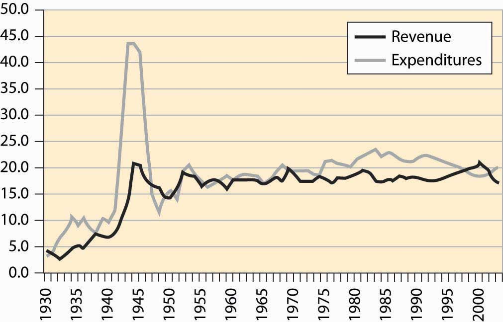
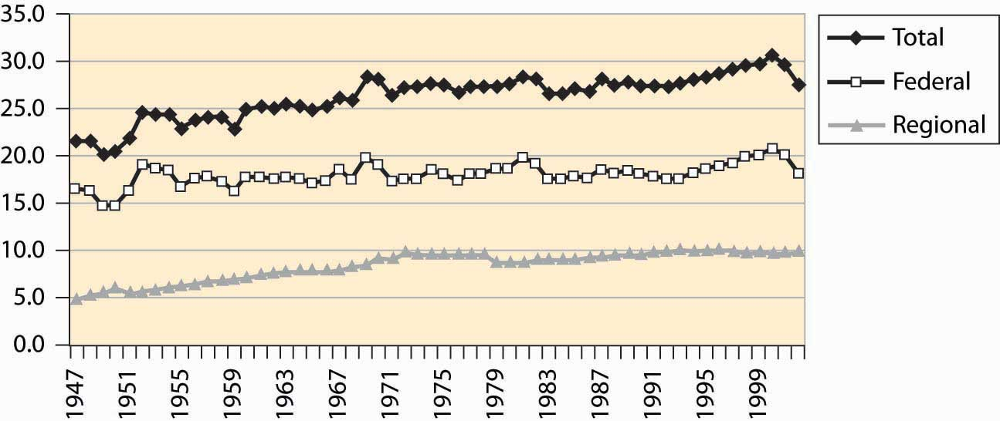
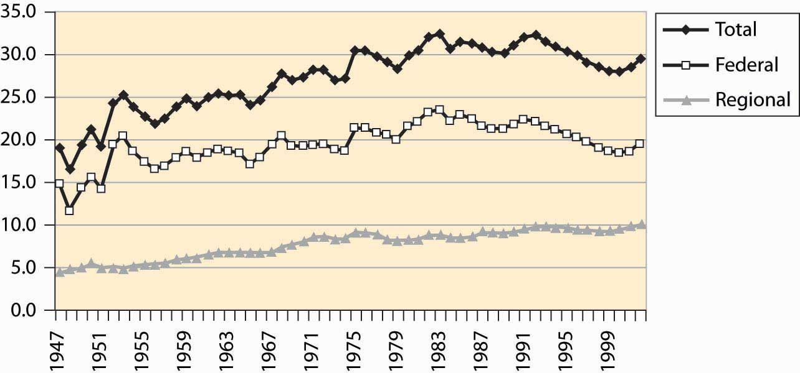
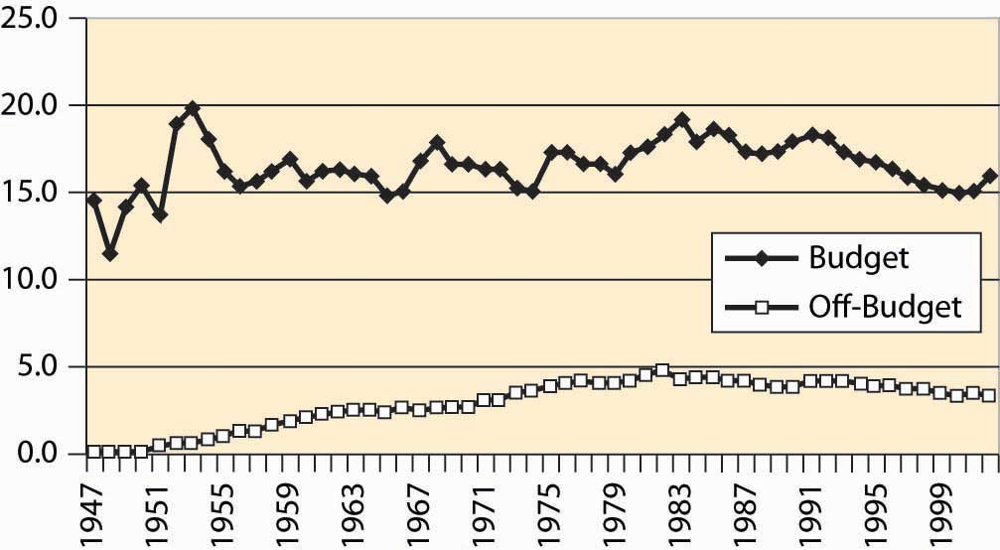
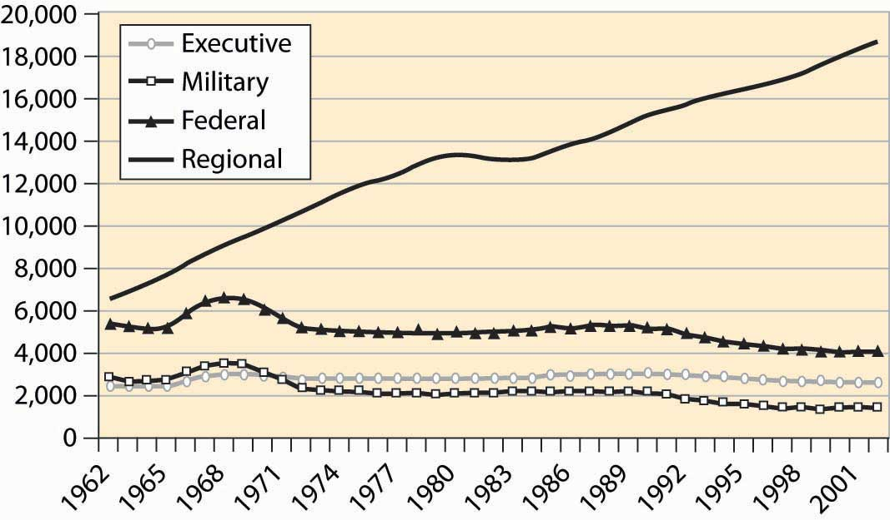
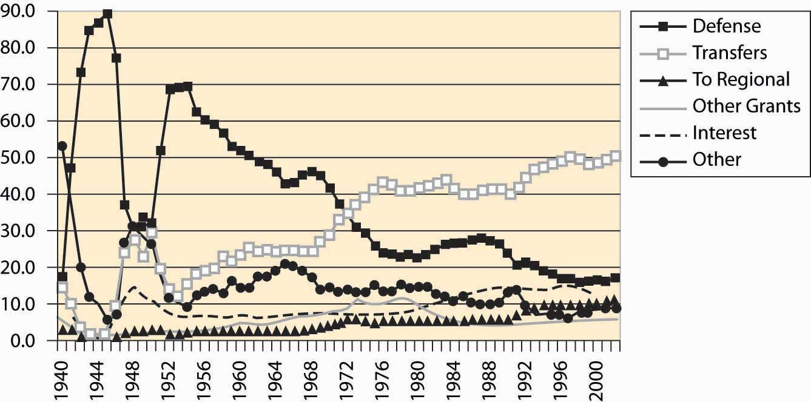
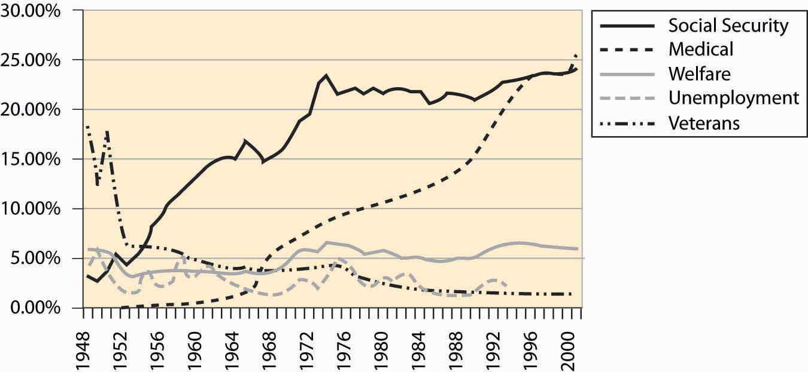
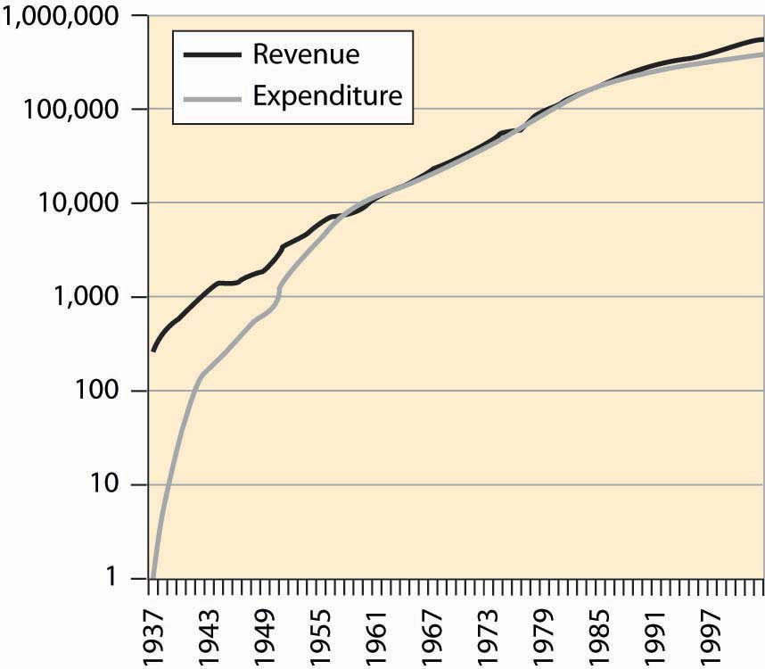
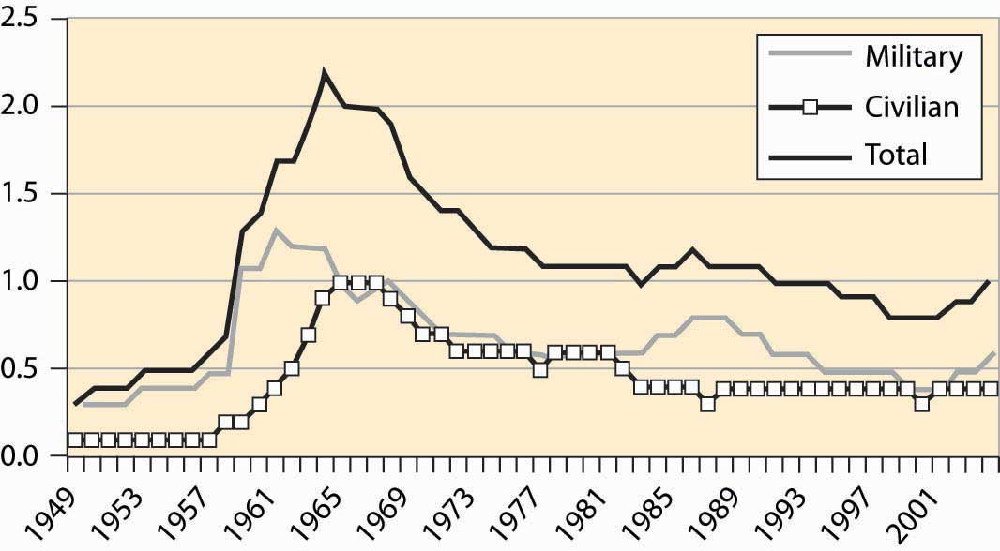
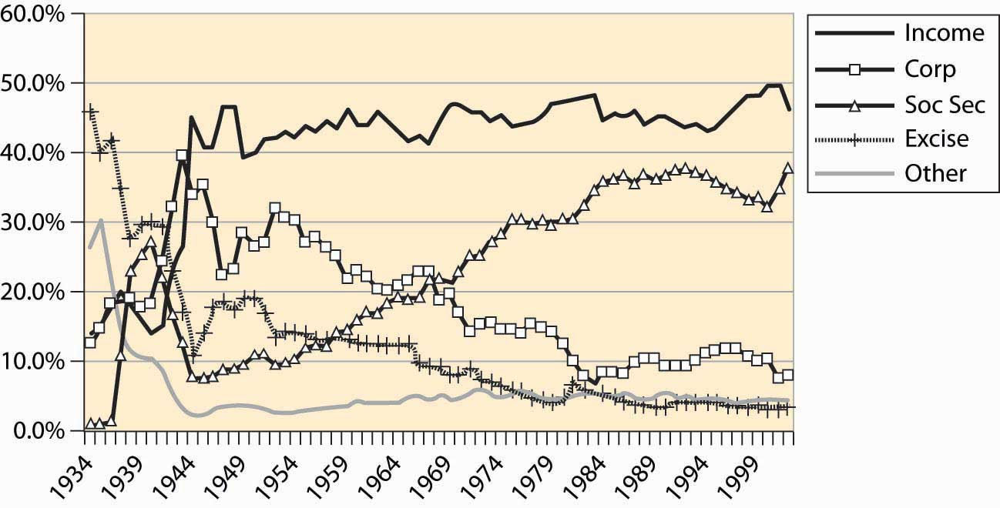

With a budget over $2 trillion, the federal government represents just under 20% of the U.S. economy. It is one of the largest organizations in the world; only nations are larger organizations, and only a handful of nations are larger.
The size of the federal government, as a percentage of GDP, is shown in Figure 4.39 "Federal expenditures and revenues (percent of GDP)". Federal expenditures boomed during World War II (1940–1945), but shrank back to nearly prewar levels shortly afterward, with much of the difference attributable to veterans’ benefits and continuing international involvement. Federal expenditures, as a percentage of GDP, continued to grow until Ronald Reagan’s presidency in 1980, when they began to shrink slightly after an initial growth. Figure 4.39 "Federal expenditures and revenues (percent of GDP)" also shows federal revenues, and the deficit—the difference between expenditures and revenues—is apparent, especially for World War II and 1970 to 1998.
Figure 4.39 Federal expenditures and revenues (percent of GDP)
Much has been written about the federal government’s “abdication” of various services, which are pushed onto state and local government. Usually this behavior is attributed to the Reagan presidency (1980–1988). There is some evidence of this behavior in the postwar data, but the effect is very modest and long term. Most of the growth in state and local government occurred between 1947 and 1970, well before the Reagan presidency; state and local government has been stable since then. Moreover, the expenditure of the federal government, which shows ups and downs, has also been fairly stable. In any event, such effects are modest overall.
Figure 4.40 Federal, state, and local level, and total government receipts (% GDP)
Figure 4.40 "Federal, state, and local level, and total government receipts (% GDP)" sets out the taxation at both the federal and state and local (merged to be regional) level. Figure 4.41 "Federal, regional, and total expenditures (% GDP)" shows expenditures of the same entities. Both figures are stated as a percentage of GDP. State and local taxation and expenditures doubled over the postwar period. The two figures are very similar. The federal government’s expenditures have varied more significantly than its revenues.
Figure 4.41 Federal, regional, and total expenditures (% GDP)
A peculiarity of the U.S. federal government is a preference for “off-budget” expenditures. Originally, such off-budget items involved corporations like Intelsat (which commercialized satellite technology) and RCA (the Radio Corporation of America, which commercialized radio), as well as other semi-autonomous and self-sustaining operations. Over time, however, off-budget items became a way of hiding the growth of government, through a process that became known as “smoke and mirrors.” The scope of these items is graphed in Figure 4.42 "Federal expenditures, on and off budget (% GDP)".
Figure 4.42 Federal expenditures, on and off budget (% GDP)
During the 1980s, the public became aware of off-budget items. Political awareness made off-budget items cease to work as a device for evading balanced-budget requirements, and few new ones were created, although they continue to be debated. Sporadically, there are attempts to push social security off-budget.
Figure 4.43 Federal and regional government employment
Federal employees include two major categories: uniformed military personnel and the executive branch. State and local government is much larger and has tripled in size since 1962, a fact illustrated in Figure 4.43 "Federal and regional government employment". The biggest growth areas involve public school teachers, police, corrections (prisons), and hospitals. About 850,000 of the federal employees work for the postal service.
Figure 4.44 Major expenditures of the federal government
Figure 4.45 Major transfer payments (% of federal budget)
Transfers to individualsDirect payments to individuals in the form of a check. represent almost 50% of federal expenditures. These transfers are direct payments to individuals in the form of a check. Such transfers include social security, Medicare, Medicaid, unemployment insurance, and veteran benefits. Transfers to state and local governments are listed as regional. “Other grants” also involve sending checks, usually with strings attached. Expenditure shares are graphed in Figure 4.44 "Major expenditures of the federal government", while the breakdown of federal transfers is provided in Figure 4.45 "Major transfer payments (% of federal budget)". The growth in social security during the 1950s and 1960s is primarily a consequence of increasing benefit levels. The growth in Medicare and Medicaid payments over the period 1970 to 1990, in contrast, is primarily a consequence of increased costs of existing programs rather than increases in benefit levels.
Figure 4.46 Social security revenue and expenditure ($ millions)
A question you may ask, quite reasonably, is whether the social security program can survive to the time when you retire. A common misunderstanding about social security is that it is an investment program—that the taxes individuals pay in are invested and returned at retirement. As Figure 4.46 "Social security revenue and expenditure ($ millions)" makes clear, for most of its existence the social security program has paid out approximately what it took in.
The social security administration has been ostensibly investing money and has a current value of approximately $1.5 trillion, which is a bit less than four times the current annual expenditure on social security. Unfortunately, this money is “invested” in the federal government, and thus is an obligation of the federal government, as opposed to an investment in the stock market. Consequently, from the perspective of someone who is hoping to retire in, say, 2050, this investment isn’t much comfort, since the investment won’t make it easier for the federal government to make the social security payments. The good news is that the government can print money. The bad news is that when the government prints a lot of money and the obligations of the social security administration are in the tens of trillions of dollars, it isn’t worth very much.
Figure 4.47 Federal debt, total and percent of GDP

The federal government runs deficits, spending more than it earned. In most of the past 75 years, we see from Figure 4.39 "Federal expenditures and revenues (percent of GDP)" that the government runs a deficit, bringing in less than it spends. Interest has been as high as 15% of the cost of the federal government (see Figure 4.44 "Major expenditures of the federal government"). How large is the debt, and how serious is it? Figure 4.47 "Federal debt, total and percent of GDP" gives the size of the federal debt in absolute dollars and as a percent of GDP. The debt was increased dramatically during World War II (1940–1945), but over the next 25 years little was added to it, so that as a portion of growing GDP, the debt fell.
Starting in the late 1970s, the United States began accumulating debt faster than it was growing, and the debt began to rise. That trend wasn’t stabilized until the 1990s, and then only because the economy grew at an extraordinary rate by historical standards. The expenditures following the September 11, 2001, terrorist attacks, combined with a recession in the economy, have sent the debt rising dramatically, wiping out the reduction of the 1990s.
The national debt isn’t out of control, yet. At 4% interest rates on federal borrowing, we spend about 2.5% of GDP on interest servicing the federal debt. The right evaluation of the debt is as a percentage of GDP; viewed as a percentage, the size of the debt is of moderate size—serious but not critical. The serious side of the debt is the coming retirement of the baby boom generation, which is likely to put additional pressure on the government.
An important distinction in many economic activities is one between a stock and a flow. A stockThe current amount of some material. is the current amount of some material; flowThe rate of change in the amount of some material that exists from one instant to the next. represents the rate of change in the amount of some material that exists from one instant to the next. Your bank account represents a stock of money; expenditures and income represent a flow. The national debt is a stock; the deficit is the addition to the debt and is a flow. If you think about a lake with incoming water and evaporation, the amount of water in the lake is the stock of water, while the incoming stream minus evaporation is the flow.
Table 4.1 Expenditures on agencies as percent of non-transfer expenditures
| Department or Agency | 1977 | 1990 | 2002 |
|---|---|---|---|
| Legislative | 0.4 | 0.4 | 0.5 |
| Judiciary | 0.2 | 0.3 | 0.6 |
| Agriculture | 2.1 | 2.2 | 2.7 |
| Commerce | 3.2 | 0.7 | 0.7 |
| Education | 3.9 | 3.8 | 6.7 |
| Energy | 3.1 | 3.2 | 2.9 |
| Health | 3.7 | 4.6 | 8.3 |
| Defense | 43.8 | 59.2 | 46.9 |
| Homeland Security | - | - | 4.1 |
| Housing & Urban Dev. | 13.4 | 2.9 | 4.3 |
| Interior | 1.6 | 1.3 | 1.4 |
| Justice | 1.0 | 1.7 | 2.7 |
| Labor | 6.1 | 1.7 | 1.7 |
| State | 0.6 | 0.9 | 1.3 |
| Transportation | 2.2 | 2.6 | 2.1 |
| Treasury | 1.7 | 1.6 | 1.4 |
| Veterans | 2.3 | 2.6 | 3.3 |
| Corps of Engineers | 1.0 | 0.6 | 0.6 |
| Environmental P.A. | 1.1 | 1.1 | 1.1 |
| Fed Emergency M.A. | 0.2 | 0.4 | 0.0 |
| GSA | 0.2 | 0.5 | 0.0 |
| Intl Assistance | 2.8 | 2.7 | 1.9 |
| NASA | 1.6 | 2.5 | 2.0 |
| NSF | 0.3 | 0.4 | 0.7 |
Table 4.1 "Expenditures on agencies as percent of non-transfer expenditures" gives the expenditures on various agencies, as a percentage of the discretionary expendituresGovernment expenditures that aren’t transfers., where discretionary is a euphemism for expenditures that aren’t transfers. Transfers, which are also known as entitlements, include social security, Medicare, aid to families with dependent children, unemployment insurance, and veteran’s benefits. Table 4.1 "Expenditures on agencies as percent of non-transfer expenditures" provides the expenditures by what is sometimes known as the “Alphabet Soup” of federal agencies (DOD, DOJ, DOE, FTC, SEC, …).
The National Science Foundation (NSF) provides funding for basic research. The general idea of government-funded research is that it is useful for ideas to be in the public domain and, moreover, that some research isn’t commercially viable but is valuable nevertheless. Studying asteroids and meteors produces little, if any, revenue but could, perhaps, save humanity one day in the event that we needed to deflect a large incoming asteroid. (Many scientists appear pessimistic about actually deflecting an asteroid.) Similarly, research into nuclear weapons might be commercially viable; but, as a society, we don’t want firms selling nuclear weapons to the highest bidder. In addition to the NSF, the National Institutes of Health, also a government agency, funds a great deal of research. How much does the government spend on research and development (R&D)? Figure 4.48 "Federal spending on R&D (% GDP)" shows the history of R&D expenditures. The 1960s “space race” competition between the United States and the Soviet Union led to the greatest federal expenditure on R&D, and it topped 2% of GDP. There was a modest increase during the Reagan presidency (1980–1988) in defense R&D, which promptly returned to earlier levels.
Figure 4.48 Federal spending on R&D (% GDP)
Where does the government get the money to buy all these things? As we see in Figure 4.49 "Sources of federal government revenue", the federal income tax currently produces just under 50% of federal revenue. Social security and Medicare taxes produce the next largest portion, with around 30%–35% of revenue. The rest comes from corporate profits’ taxes (about 10%), excise taxes like those imposed on liquor and cigarettes (under 5%), and other taxes like tariffs, fees, sales of property like radio spectrum and oil leases, and fines. The major change since World War II is the dramatic increase in social security, a consequence of the federal government’s attempt to ensure the future viability of the program, in the face of severely adverse demographics in the form of the retirement of the baby boom generation.
Figure 4.49 Sources of federal government revenue
An important aspect of tax collection is that income taxes, like the federal income tax as well as social security and Medicare taxes, are very inexpensive to collect relative to sales taxes and excise taxes. Income taxes are straightforward to collect even relative to corporate income taxes. Quite reasonably, corporations can deduct expenses and the costs of doing business and are taxed on their profits, not on revenues. What is an allowable deduction, and what is not, makes corporate profits complicated to administer. Moreover, from an economic perspective, corporate taxes are paid by consumers in the form of higher prices for goods, at least when industries are competitive.